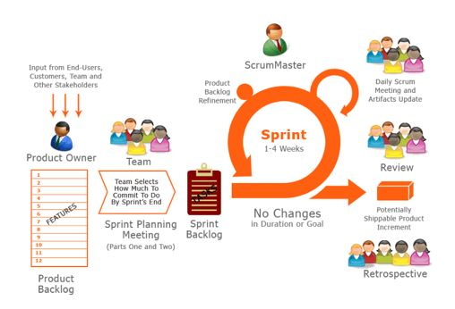

5.2 Part II - Establish the Methodology:
Prior to implementing a specific development methodology, the definitions for the development entry and exit criteria need to be defined. Thus, prior to beginning development through any of the methodologies, two definitions should be agreed upon between the PO and development team in reference to individual PBIs:
Deifinition of Ready
Purpose
EXAMPLE DEFINITION OF READY CHECKLIST
Definition of Done
Purpose
EXAMPLE DEFINITION OF DONE CHECKLIST
This section provides a template for the scrum process. As it is a template, government and development teams are encouraged to adapt the process based on team structure, culture and regulatory constraints to make it more efficient. To that effect, this section is prescriptive versus directive in nature. Also note that we have transitioned from the general agile term of PBI to user stories as they relate to Scrum.
Scrum Methodology:

Scrum Events
The five key Scrum events are:
Product Backlog Refinement
Feature Refinement Session (2 Sprints early): Coordinated by the Scrum Master with the Solution Architect and Customer System Engineer (and POs if available) to:
User Story Refinement Collaboration (Between Feature and User Story Refinement Sessions): Team designated Business Analyst works collaboratively with the PO to refine story priority and the acceptance criteria necessary to accomplish the associated feature functionality. Team testers can also add necessary positive test cases based on draft acceptance criteria to the story (facilitates test driven development).
Refinement Session - User Stories (1 Sprint early): Business Analyst discusses each story with the development team to ensure understanding of delivery requirements. The PO is included in this refinement session, but it is the development team that is being introduced to the stories. The PO is there to confirm through listening to the team's conversations with the Business Analyst that his/her intent is understood within the context of the story. This refinement session is done to ensure that each story meets the established Definition of Ready prior to being accepted into the sprint for development.
Meeting the Definition of Ready: The acronym INVEST provides a high-level cross-check of whether a story is Ready for development. It is normally part of the last check done on a story during either Refinement Day activities or as part of Sprint Planning for priority stories that have been updated since Refinement Day.
While it is presented here under the Scrum section, it can be used with modification (I.e. Kanban work flow estimates versus sprint estimates) within the other agile frameworks as a final check for each PBI). The acronym represents the following criteria:
Based on the high-level of interaction between the team and the PO in this option, each story should have as a minimum 3 touch points with the PO to confirm that PO's intent is maintained throughout refinement. At a minimum, these touch points are the verification of the acceptance criteria in the documentation, the answering of team questions during team refinement of stories, and the final acceptance of the story as ready for development At this point the story is considered "ready" for acceptance into a sprint during sprint planning.
Sprint Planning
Sprint Planning (Appendix A)
Planning centers around the presence of the PO within the Planning meeting. During this meeting, the PO will review the current list of Ready user stories to ensure that they are still valuable (relevant), as well as reprioritize the Backlog based on existing value as necessary (this facilitates the team's acceptance of work into the sprint as they simply take user stories from the top of the list within their established sprint capacity.
Sprint Execution
Sprint Execution (Appendix A)
While developers and testers work to complete and validate the work required for each user story, Business Analysts and, if necessary, POs are available for clarification of requirements to ensure that the work produced meets the intent of the customer. If refinement has been done correctly, sprint execution consists of developers completing their work, testers executing the tests developed prior to the sprint (with the addition of any necessary negative test cases), and BAs and testers reviewing the completed work with the PO in order to receive early feedback or formal closure of the story as meeting the teams "Definition of Done". The user story acceptance criteria is the foundation for this definition. The story points assigned to sprint user stories not designated as "Done" are not counted when measuring sprint completion velocity.
Sprint Review
Sprint Review (Appendix A)
Story acceptance as Done is completed by the PO only (the same person who approves the acceptance criteria must be the person who approves work against the approved acceptance criteria). If the PO believes that the work does not satisfy the customer requirements, they have to make a decision: if the work does not meet the acceptance criteria, they can reject the work as not done and provide additional clarification; if the work meets the acceptance criteria, but the PO wants additional revisions, additional user stories are created and prioritized within the existing backlog. The key to the review is that it is interactive between the PO and Development Team - the focus being to improve the product.
Sprint Retrospective
Sprint Retrospective (Appendix A)
This is where the POs and the Development Team focus on improving the Agile process. Critical to understanding the concept of the retrospective is that learning always occurs during these events (Successful sprints can indicate items to sustain; failed sprints provide opportunities to learn where the team can improve). One note to remember in the retrospective is that the process should facilitate the development efforts - not impede them (hence why this document is presented as a template - it needs to be adjusted to fit the needs of the agile environment in which it exists which is a combination of the people, processes, tools, relationships and levels of trust involved in the project).